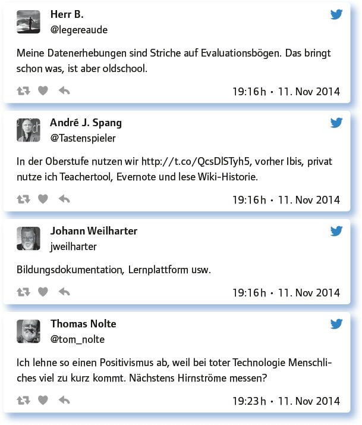

von Monika Heusinger
BigData besitzt in der Wirtschaft Potenziale zur Optimierung von Prozessen sowie zur Individualisierung von Angeboten. Daraus entsteht die Frage, inwiefern im schulischen Bereich die Analyse von Daten Lehr-Lern-Prozesse verbessern und individualisieren kann.
BigData, Learning Analytics – von was reden wir da überhaupt und kann es das Lernen und Lehren verbessern?
Als Vorteile wurde genannt, dass über Datenanalyse Lernprozesse verbessert werden und Lernfortschritte damit exakt gemessen werden können. Als Nachteil wird gesehen, dass hier eventuell eine Totalüberwachung der Lernenden erfolgt.
Welche technische Ausrüstung brauchen Schulen/Universitäten, damit BigData überhaupt funktionieren kann?
Neben brauchbaren Netzwerkstrukturen für Intra- und Internet wird als technische Voraussetzung genannt, dass auch der Unterricht auf/mit digitalen Geräten durchgeführt werden müsste.
I think we would need to discuss aims and plans before we could ask for technical equipment. „Why“ before „how“.
Theoretisch sind ja die meisten Daten und zumindest Zensuren der Schüler in EDV erfasst. Die SuS haben nur keinen Zugriff, oder?
Hoffentlich bleiben die Leistungsdaten besonders geschützt! Ich bin auch gegen eine quantitative Ausweitung.
Datenerfassung findet überall statt, nicht nur in Schulen. Datenbanken, WLAN Logins, Mailsystemen. BigData ist überall.
Zunächst einmal müsste der Unterricht auf/mit digitalen Geräten Standard sein.
Rechtliche Absicherung, technische Infrastruktur, fachliche Qualität.
Brauchbare Netzwerkstrukturen für Intra- und Internet.
Technisch? Nun z. B. digitale Schülerakten. Bislang sind die (oft in ihrem Infogehalt ungenutzt) als tote Daten im Aktenschrank.
Bei Khan Academy sind schon heute 10 der 50 Mitarbeiter Data Scientists!
Do it yourself: Machst du selbst schon Datenerhebung/-analyse? Wie und was bringt es im Hinblick auf Unterrichtsentwicklung denn?
Es macht den Eindruck, dass die Teilgeber noch keine digitale Datenerhebung für die Unterrichtsentwicklung verwenden, sondern diese eher „analog“ durchführen. Es werden aber anscheinend schon Schulverwaltungsprogramme genutzt, um Leistungsdaten schneller und ortsunabhängiger verwalten zu können.

Wie sieht es denn mit dem Datenschutz aus? Was braucht BigData, damit es organisatorisch und rechtlich im Schulsystem ankommt?
Hier einige Vorschläge der Teilgeber:
Daten müssen geschützt werden – klare Sache. Hinzu muss auch ein Umdenken in Bezug auf Daten und deren Nutzung kommen.
Zunächst Aufklärungsarbeit, was BigData für Konsequenzen, Nutzen und Gefahren für Schule und Unterricht hat.
Wir müssen vor allem klären, wem die persönlichen Lerndaten gehören und u. U. bereit sein, für die Dienste zu bezahlen.
Evaluationsstudien, die die Wirksamkeit und Zweckmäßigkeit von BigData in Schule und Unterricht wissenschaftlich fundieren.
Antworte auf 3 Tweets unterschiedlicher Teilgeberinnen a), zustimmend, b) kritisch, c) provozierend!
Circa 2020: Nehmen wir an, wir hätten Tabletklassen, Datenanalysen und Lernplattformen: (Wie) würden sich Lernprozesse verändern?
Es wurde als vorteilhaft herausgestellt, dass im Idealfall Lernprozesse und Lernerfolge besser nachvollzogen werden können und damit auch eine bessere Förderung der Schüler ermöglicht wird, weil ein konkretes Feedback einfacher wird.
Klar. ‚Damit klarkommen‘ heißt auch: Wenn, Daten funktional erheben und schützen!
Wir erhalten Daten über individuelle Lernprozesse, können Lernerfolge kontrollieren und präzise personalisierte Feedbacks geben.
Educational inference & prediction will become more effective.
Deutschland schläft. Und in den USA wird über Google Classroom BigData längst für effiziente Lernunterstützung genutzt.
Lasttweet & davon abgesehen, wäre es eine Möglichkeit zur Förderung der Kollaboration und Individualisierung von Bildungsprozessen.
Hört sich gut an. Aber was ist mit der Förderung sozialer und personaler Kompetenzen?
Beim Lernen ist kaum etwas wichtiger als Feedback – also ist doch gläsern nicht unbedingt schlecht.
Ständige Datenanalyse und Vernetzung bedeutet auch lückenlose Überwachung und gläserne Lernende – oder wie siehst du das?
Dieser Punkt wurde von den Teilgebern eindeutig bejaht und auf die dringende Notwendigkeit hingewiesen, die Daten schützen zu müssen.
Wichtiger Punkt. Aber schau mal, was man „nur“ aus den Bewegungsdaten eines Handys rausfinden kann: http://t.co/UVK1DkaL6q
Lernende müssen ja nicht zwingend Objekte der Datenanalyse sein.
Richtig, mit allen Vor- und Nachteilen.
Die Daten gehen nicht weg. Brauchen Gesetze und effiziente Technologie zum Schutz der Daten.
Welche Anregungen, Fragen hast du sonst noch zum Thema?
Die Analyse von Daten bietet viele Chancen. Sie kann Lernprozesse transparenter machen und Lernangebote können dadurch individualisiert werden. Jedoch muss der Schutz der persönlichen Daten der Lernenden gewährleistet sein. Daten sollten zudem nicht aufgrund technologischer Möglichkeiten erhoben und ausgewertet werden, sondern zweckgebunden. Sie können eine Hilfe für die Lehrperson sein, um frühzeitig individuell beraten zu können, ersetzen jedoch nicht die Lehrperson, da für eine Förderung sozialer Kompetenzen und für eine angemessene Feedbackkultur auch die persönliche Interaktion wichtig ist.
Link zum vollständigen Protokoll: